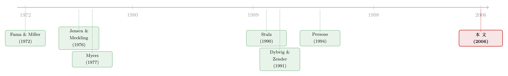

老板为什么偏爱「说不清」的项目？——一笔债，如何替股东堵死这条暗路
本文读的是 Douglas (2006, Review of Financial Studies)：当公司用「最优薪酬合同」激励经理时，会留下一道暗门——经理有动机去挑那些「结果更难看清」的项目，因为信息不对称越深，她事后能拿走的「信息租」越多。Douglas 证明，一个恰到好处的负债水平能堵住这道暗门：因为「更难看清」的项目同时意味着「更波动」，而更高的波动会把债务推向有风险的区间，于是股东被迫改用「压低经理租金」的合同。预见到这一点，经理就乖乖放弃了机会主义投资。一句话——债务在这里不是税盾，也不是纪律的鞭子，而是激励合同的「互补品」。
1 一个被薪酬合同忽略的漏洞
公司金融里有一句老话：解释资本结构，要从代理冲突说起。这条路从 Fama 与 Miller (1972)、Jensen 与 Meckling (1976) 开始，已经走了半个世纪——股东想替换成更冒险的项目去「掏空」债权人，这叫 资产替代 (asset substitution)；Myers (1977) 又补上另一面：当收益的一部分要分给债权人时，股东会拒绝本该投的好项目，这叫 投资不足 (under-investment)。后来 Jensen (1986) 和 Stulz (1990) 进一步指出，债务能逼着经理把现金吐出来、专心做价值最大化的事。
（关于 Jensen-Meckling 这条主线，可参见《债务这副药，为什么不能全吃？——重读 Jensen 和 Meckling 五十年》；关于自由现金流的纪律作用，可参见《现金为什么一定要「还」出去？——四十年后，重读 Jensen 的自由现金流》。）
但这套文献有一个挥之不去的尴尬：既然公司可以直接写一份激励合同来管经理，为什么还要绕一大圈，用资本结构去影响经理的决策？ 这不是吹毛求疵。Dybvig 与 Zender (1991) 把这个质疑推到极致：只要股东能承诺一份长期薪酬合同，经理的决策就和资本结构完全无关——Modigliani–Miller 的「无关性」竟然在代理框架里复活了。
接着，一个自然的问题是：这份长期合同，真的「锁得住」吗？Persons (1994) 给了否定的答案——这种合同往往不是 动态一致 (dynamically consistent) 的：一旦掏空债权人的机会出现，股东就会有动力把合同重新谈一遍。于是资本结构又「相关」了。但 Persons 只走到这一步：他指出了合同会被重谈，却没有告诉我们，在「会被重谈的薪酬合同」面前，最优的资本结构到底长什么样。
Douglas (2006) 接的正是这根断掉的线头。
2 模型：三个时点，两层信息不对称
要讲清这篇论文，得先把它的舞台搭起来。模型有三个时点（论文 Figure 1）：
- t = 0：公司所有者选定第二期债务面值 \(F_2\)。随后第一期现金流 \(c_1\) 实现，它服从 \(c_1 \sim \text{unif}[\underline{c},\bar{c}]\)，可观察但不可签约。经理同时做出资产替代选择 \(\Delta y\)，也是可观察、不可签约。
- t = 1：股东提出第二期薪酬合同；投资结果 \(\varepsilon\) 实现，只有经理私下观察到；经理选择努力 \(a\)，同样私下观察。
- t = 2：最终价值 \(v_2 = c_1 + \varepsilon + a\) 实现，可观察、可签约，按合同分给股东、债权人、经理。
关键在于第二期那两层信息优势：经理既私下知道投资结果 \(\varepsilon\)（隐藏知识 hidden knowledge），又私下选择努力 \(a\)（隐藏行动 hidden action）。投资结果有高低两态 \(\varepsilon \in \{\varepsilon^L, \varepsilon^H\}\)，各占一半概率，二者之差
$$\Delta\varepsilon \equiv \varepsilon^H - \varepsilon^L$$
正是经理信息优势的「深浅」刻度。经理的效用是 \(u(w,a) = w - A(a)\)，对钱中性、对努力的边际负效用递增：
$$A(a) = \begin{cases} \tfrac{k}{2}a^2 & \text{if } a \ge 0\\[2pt] 0 & \text{if } a < 0\end{cases}, \qquad A'(a) = ka.$$
保留效用与外部财富都归一化为零。
2.1 第二期合同：为什么经理一定拿得到「租」
先看债务安全（\(F_2\) 风险无虞）的情形。股东只能看到合并结果 \(\varepsilon + a\)（等价于 \(v_2\)），却分不清到底是「高结果 + 低努力」还是「低结果 + 高努力」。这是一个经典的同时含隐藏知识与隐藏行动的契约问题，与 Baron 与 Myerson (1982)、Laffont 与 Tirole (1986)、Kofman 与 Lawarree (1993) 一脉相承。激励相容 (incentive compatibility, IC) 约束要求经理不会冒充另一种状态：
$$w^L - A(a^L) \;\ge\; w^H - A(a^H + \Delta\varepsilon)$$ $$w^H - A(a^H) \;\ge\; w^L - A(a^L + \Delta\varepsilon)$$
把低态的保留效用约束 \(w^L = \underline{u} + A(a^L)\) 代入高态 IC，立刻得到一条关键不等式：
$$w^H - A(a^H) \;\ge\; \underline{u} + A(a^L) - A(a^L - \Delta\varepsilon).$$
右边那一项 \(A(a^L) - A(a^L - \Delta\varepsilon) > 0\) 就是经理在高态拿到的 信息租 (information rent)——只要她同时握着「私下知道 \(\varepsilon\)」和「私下选 \(a\)」这两张牌，股东就不得不多付她这笔钱，否则她会谎报。
求解股东的拉格朗日问题，一阶条件给出乘子 \(\lambda^L_{RU}=1\)、\(\lambda^H_{IC}=0.5\)，并得到两个漂亮的结论：高态诱导 出第一最优行动 \(A'(a^H)=1 \Rightarrow a^H = a^{FB}\)；低态却被故意压低：
$$1 - A'(a^L) \;=\; A'(a^L) - A'(a^L - \Delta\varepsilon) \;\Rightarrow\; A'(a^L) < 1. \tag{1}$$
直觉是：把低态努力 \(a^L\) 压下去，会缩小经理「假装是低态」的诱惑（因为 \(A'' = k > 0\)，努力越低，边际负效用越小，冒充的成本越高），从而省下高态那笔租。这就是一个干净的权衡——高态多付的租，换低态损失的效率。
2.2 核心方程：把代理成本写成价值的一道楔子
把这两份成本加起来，定义信息租与契约成本：
$$\rho(a^L,\Delta\varepsilon) \equiv A(a^L) - A(a^L - \Delta\varepsilon),$$ $$k(a^L,\Delta\varepsilon) \equiv \tfrac{1}{2}\,\rho(a^L,\Delta\varepsilon) + \tfrac{1}{2}\big[a^{FB} - A(a^{FB}) - (a^L - A(a^L))\big].$$
第一项是期望信息租，第二项是低态努力低于第一最优造成的期望效率损失。把最优合同代回目标函数，t = 1 的公司价值就能写成一个极其透亮的形式——它正是本文所有故事的支点：
注意 \(a_2\) 这一项：资产替代是一次 均值保持展宽 (mean preserving spread)，它不动 \(E[\varepsilon]\)，只把 \(\Delta\varepsilon\) 从 \(\Delta x\) 拉大到 \(\Delta x + \Delta y\)。所以它对公司价值的影响全部经由最后那项 \(k\)。这就引出了全文的张力。
3 暗门：经理为什么偏爱「说不清」的项目
接下来是最反直觉的一步。在线性边际负效用 \(A'(a)=ka\) 下，对方程 (1) 求导可得 \(a^{L*} = a^{FB} - \Delta\varepsilon\)，即 \(da^{L*}/d\Delta\varepsilon = -1\)。代入契约成本，用包络定理得到：
$$\frac{dk\big(a^{L*}(\Delta\varepsilon),\,\Delta\varepsilon\big)}{d\Delta\varepsilon} \;=\; \tfrac{1}{2}\,A'(a^{L*} - \Delta\varepsilon) \;>\; 0.$$
也就是 Lemma 1：资产替代（把 \(\Delta\varepsilon\) 做大）抬高了契约成本 \(k\)，从而降低了公司价值。从股东和公司的角度看，这是一件坏事。
那么经理为什么还要这么干？因为她在意的不是公司价值，而是自己那笔租 \(\rho = A(a^L) - A(a^L - \Delta\varepsilon)\)。\(\Delta\varepsilon\) 越大，她的信息优势越深，高态能攫取的租金越多。于是出现了一个第一期的逆向资产替代动机——但请注意，它和教科书里那个「掏空债权人」的资产替代不是一回事：在债务安全时，它掏的是股东的口袋，靠的是把自己的信息墙砌得更高。经理偏爱「结果更难看清」的项目，正是因为「看不清」本身能变现成钱。
（一个相邻但不同的故事——短债如何影响股东的冒险动机——可参见《短债真的能「管住」股东吗？——一个关于「滚动陷阱」的反转》。）
4 反转：让债务在「被掏空时」恰好变危险
到这里，舞台上只有股东和经理。债务还没登场。而真正关键的一步，是 Douglas 让债务在恰当的时刻「变脸」。
回想资产替代的本质：它是均值保持展宽，把结果分布拉得更胖。更胖的尾部，意味着低态结果更低，债务在低态更可能违约。 于是只要债务水平 \(F_2\) 选得恰到好处——在经理资产替代时变得有风险、不替代时则安全——故事就彻底反转了。
一旦债务有风险，低态的残值就由债权人、而非股东承担。股东设计合同时不再为低态的效率损失买单（那是债权人的事），他们只想着把高态的那笔租金压到最低。这恰恰是 Myers (1977) 式的「债务积压 (debt overhang) → 投资不足」：股东在低结果之后过度压低努力 \(a^L\)。但对经理而言，后果是致命的——她费心做大 \(\Delta\varepsilon\) 想多拿的那笔租，在「股东不再关心低态」的新合同下灰飞烟灭。
于是，预见到资产替代会把债务推进危险区、进而摧毁自己的租金，经理主动放弃了机会主义投资。在均衡里，经理选择高效率的项目，股东提供价值最大化的薪酬合同，债务一次也没真的违约——它只是作为一个「悬在头顶」的威胁，完成了激励合同独力做不到的事。这就是债务的激励互补角色。
5 最优资本结构：在两种「机会主义」之间走钢丝
债务这把刀有两面。第一期现金流 \(c_1\) 决定了债务的安全垫有多厚，于是：
- \(c_1\) 极高时：即便经理资产替代，债务仍安全 → 威胁失效 → 经理照样替代 → 付出资产替代的代价；
- \(c_1\) 居中时：资产替代会让债务变危险、不替代则安全 → 威胁生效 → 经理收手 → 零代价的理想区间；
- \(c_1\) 极低时：哪怕不替代，债务也已经危险 → 股东在低态过度投资不足 → 付出投资不足的代价。
而在这个模型里，投资不足比资产替代更贵——因为后者只是部分效率损失，前者却是对低结果效率的「完全无视」。所以公司宁愿选一个相对较低的债务水平：牺牲掉「极高 \(c_1\)」那一段的些许资产替代，也要避开「极低 \(c_1\)」那一段昂贵的投资不足。
这一步直接长出了一串可检验的实证含义。投资机会对杠杆有两股相反的力：其一，机会抬高期望现金流，需要更多债务才压得住资产替代（正向）；其二，机会抬高经理的信息租、从而抬高股东「鼓励掏空债权人」的诱惑，需要更少债务才能保住有效率的薪酬（负向）。对「正常」机会（有价值但有风险）而言负向力占优，于是 杠杆与市账比 (market-to-book) 负相关——这与 Titman 与 Wessels (1988)、Rajan 与 Zingales (1995)、Johnson (2003) 的发现一致；但在极端市账比处第一股力反超，关系反转——这正对应 Rajan 与 Zingales (1995, note 32) 在低市账比处看到的正相关。
更妙的是薪酬维度：更高的信息租天然对应高结果时更高的报酬，于是投资机会推高 业绩敏感度 (pay-for-performance)，给出 PPS 与市账比的正相关（Smith 与 Watts 1992；Gaver 与 Gaver 1993）；再叠加上面那条非单调的杠杆—市账比关系，模型预言 PPS 与杠杆负相关（除非市账比极高），对上了 Ortiz-Molina (2004)。最后，期望现金流越高、波动越低的公司杠杆越高——后者契合 Bradley、Jarrell 与 Kim (1984) 关于杠杆随 EBITDA 波动下降的发现；而杠杆与盈利能力负相关，则与 Rajan 与 Zingales (1995)、以及 Welch (2004)「盈利—杠杆关系实由盈利对市值的影响驱动」的结论吻合。
6 文献脉络
把这条线索摊开看：Fama 与 Miller (1972)、Jensen 与 Meckling (1976) 立起「资产替代」的桩，Myers (1977) 补上「投资不足」的另一根桩——这两根桩，恰好是 Douglas 模型在「高 \(c_1\)」和「低 \(c_1\)」两端各自付出的代价。Stulz (1990) 则代表了「债务作为纪律工具」的视角。真正的转折发生在 Dybvig 与 Zender (1991)：他们用长期合同「证伪」了资本结构的相关性；Persons (1994) 又用动态一致性把它「证活」，却没走到最优资本结构那一步。Douglas (2006) 站的正是这个位置——它接住 Persons 留下的问题，第一次刻画了「会被重谈的薪酬合同」面前的最优负债。

与之并行的，还有 Dewatripont 与 Tirole (1994) 和 Berkovitch、Israel 与 Spiegel (2000)：那里资本结构同样与显性薪酬合同结合去诱导努力，但股东与债权人一致偏好高努力合同；Douglas 的不同之处，恰恰在于他聚焦于股东与债权人对「合同诱导出的行动」意见相左的情形。而 Dow 与 Raposo (2003) 关注经理为了影响未来合同而选的初始策略——这与本文「第一期行动改变第二期契约环境」的设定遥相呼应，只是 Douglas 把落点放在了资本结构上。
7 评论与延伸（Q&A + 研究方向）
(a) 几个可能的疑问
Q：这里的「资产替代」和 Jensen-Meckling 那个经典的资产替代，到底差在哪？
差在「谁被掏空」和「为什么」。经典版里，股东选高风险项目把财富从债权人手里转走，受益人是股东。本文里，债务安全时的资产替代受益人是经理，机制是她把均值保持展宽 \(\Delta y\) 做大，从而加深自己的信息优势、攫取更多信息租——掏的是股东的口袋。它只是「看起来像」资产替代（同样是把结果分布拉胖）。
Q：为什么非得用债务？直接在薪酬合同里写死「不许选高波动项目」不行吗？
因为资产替代选择 \(\Delta y\) 是可观察但不可签约的（验证未来收益分布的成本太高），所以写不进合同。而且 Dybvig-Zender 已经说明：能签约的长期合同会让资本结构无关。本文的全部张力，建立在 Persons 的洞察上——薪酬合同会被股东事后重谈，不可信；而债务合同被假定比薪酬合同更难重谈，正是这种「黏性」让债务的威胁可信。
Q：「债务更难重谈」这个假设，是不是太方便了？
这是模型的命门，作者也坦承。整个激励对齐都建立在「债务到期支付难以调整、薪酬合同却可以」之上。现实中两者的可重谈性是连续谱，而非黑白。若债务也能廉价重谈，威胁就软了，结论会向 Modigliani-Miller 回摆。它是一个合理但需要实证支撑的假设。
Q：为什么投资不足比资产替代「更贵」，这个排序稳健吗？
在本文设定里，投资不足意味着股东对低结果的效率损失「完全无视」（因为债权人买单），而资产替代只是经理多拿了一部分租、效率只部分受损。这个量级排序驱动了「选较低杠杆」的结论。但它依赖具体的函数形式（二次型负效用、两态结果），换一套设定排序未必照旧——这正是结论对参数敏感的地方。
Q：杠杆与市账比在极端处反转，这个预言有人验过吗？
作者明说「尚待充分检验」，只能援引 Rajan 与 Zingales (1995, note 32) 在低市账比处观察到的正相关作为旁证。换言之，这是本文最有特色、却也最缺乏直接证据的一条预言——它恰恰是后来者最该去做的事。
Q：模型说均衡里债务从不真的违约，那现实中观察到的违约怎么解释？
模型里债务的违约威胁是「在路径外」起作用的——它悬在头顶逼经理收手，所以均衡路径上不发生。这是很多激励模型的共性。要把它和现实违约率对上，需要引入额外的外生冲击或不完美信息，使威胁偶尔真的兑现。
(b) 几个可能的研究问题与提案
-
「信息不对称深度」与杠杆的非单调关系——拿公司债市场去验。 【经济故事】本文最独特的预言是杠杆—市账比在极端处反转，其底层是「投资机会↑→信息租↑→需要更低杠杆」这股负向力。如果能找到一个直接度量「信息不对称深度」的代理（如分析师预测离散度、买卖价差、PIN），就能更干净地检验这股力，而不必只靠市账比。 【可行性】中。数据可得（I/B/E/S、TRACE、Compustat），难点在识别：信息不对称与杠杆互为因果，需要外生冲击（如券商关闭、指数纳入改变覆盖度）作为工具。
-
外资持有人如何改变「债务的激励互补」角色？ 【经济故事】本文的威胁依赖「债务比薪酬更难重谈」。外资债权人往往协调成本更高、更难参与事后重谈，这理论上会强化债务的承诺价值，从而对经理的资产替代约束更紧。 【可行性】中低。需要债券层面的持有人国籍数据（如 eMAXX、Morningstar 固收持仓）配合高管薪酬（ExecuComp）。识别上可借助资本管制放开或本币计价债券的需求冲击。是个新颖但数据门槛偏高的方向。
-
债务流动性会不会削弱这个威胁？ 【经济故事】模型假定债务难以调整。但若二级市场极其流动、再融资几乎无摩擦，债务的「黏性」就被稀释，激励对齐效果应当减弱。可检验：流动性更高的债务结构，是否对应更弱的 PPS-杠杆负相关？ 【可行性】高。债券流动性度量已相当成熟（参见《把「成交价」从「成交量」里解放出来——重新丈量公司债的流动性》），与薪酬数据合并即可做横截面回归，识别上仍需处理内生性，但起点扎实。
-
把「投资不足 vs 资产替代」的成本排序放进结构估计。 【经济故事】结论「选较低杠杆」完全取决于两类机会主义成本的相对大小。能否用一个结构模型，从观察到的杠杆—现金流—薪酬联合分布中反推出这个排序，并检验它在不同行业（如高无形资产 vs 重资产）间是否系统性不同？ 【可行性】中。需要一个可估计的动态契约模型与较强的函数形式假设；属于「理论驱动的结构实证」，doable 但工作量大。
8 我的判断
Douglas (2006) 最漂亮的地方，是把一个老问题——「既然能写合同，为什么还需要资本结构」——回答得既优雅又自洽：债务不是替代薪酬合同，而是补全它在动态一致性上的缺口。它给「波动」赋予了一个全新的含义：波动不只是风险，更是经理信息租的来源；而债务恰好把「做大波动」与「债务变险」绑在一起，让经理的小聪明无处施展。这个「均值保持展宽 → 债务变险 → 股东弃租 → 经理收手」的链条，是整篇文章真正的智力快感所在。
但我对识别（这里指模型结论对假设的依赖）有两点保留。其一，全部结论悬于「债务比薪酬更难重谈」这一根支柱，而现实中两者的可重谈性都是连续的、内生的——一旦债务也能廉价重谈，威胁立刻失效。其二，「投资不足比资产替代更贵」的量级排序，以及由此得出的「选较低杠杆」，高度依赖二次型负效用与两态结果的具体设定，稳健性存疑。
我最想看到的后续，是有人认真去验那条最有辨识度、也最缺证据的预言——杠杆与市账比在极端值处的反转。它是本文区别于一切「单调负相关」资本结构理论的指纹。如果它在数据里站不住，本文的边际贡献就更多停留在「理论上的可能性」；如果它站得住，那将是对一整代资本结构实证的一次有力修正。
参考文献
Baron, D., and R. Myerson (1982). Regulating a Monopolist With Unknown Costs. Econometrica 50(4), 911–930.
Bradley, M., G. Jarrell, and E. Kim (1984). On the Existence of an Optimal Capital Structure: Theory and Evidence. Journal of Finance 39(3), 857–878.
Dewatripont, M., and J. Tirole (1994). A Theory of Debt and Equity: Diversity of Securities and Manager-Shareholder Congruence. Quarterly Journal of Economics 109(4), 1027–1054.
Douglas, A. V. S. (2006). Capital Structure, Compensation and Incentives. Review of Financial Studies 19(2), 605–632.
Dybvig, P., and J. Zender (1991). Capital Structure and Dividend Irrelevance with Asymmetric Information. Review of Financial Studies 4(1), 201–219.
Fama, E., and M. Miller (1972). The Theory of Finance. Holt, Rinehart and Winston, New York.
Jensen, M. (1986). Agency Costs of Free Cash Flow, Corporate Finance, and Takeovers. American Economic Review 76(2), 323–329.
Jensen, M., and W. Meckling (1976). Theory of the Firm: Managerial Behavior, Agency Costs and Ownership Structure. Journal of Financial Economics 3(4), 305–360.
Kofman, F., and J. Lawarree (1993). Collusion in Hierarchical Agency. Econometrica 61(3), 629–656.
Laffont, J., and J. Tirole (1986). Using Cost Observation to Regulate Firms. Journal of Political Economy 94(3), 614–641.
Myers, S. (1977). Determinants of Corporate Borrowing. Journal of Financial Economics 5(2), 147–176.
Ortiz-Molina, H. (2004). Does Capital Structure Matter in Setting CEO Pay? Working Paper, University of British Columbia.
Persons, J. (1994). Renegotiation and the Impossibility of Optimal Investment. Review of Financial Studies 7(2), 419–449.
Rajan, R., and L. Zingales (1995). What Do We Know About Capital Structure? Some Evidence from International Data. Journal of Finance 50(5), 1421–1460.
Smith, C., and R. Watts (1992). The Investment Opportunity Set and Corporate Financing, Dividend, and Compensation Policies. Journal of Financial Economics 32(3), 263–292.
Stulz, R. (1990). Managerial Discretion and Optimal Financing Policies. Journal of Financial Economics 26(1), 3–28.
Titman, S., and R. Wessels (1988). The Determinants of Capital Structure Choice. Journal of Finance 43(1), 1–19.
Welch, I. (2004). Capital Structure and Stock Returns. Journal of Political Economy 112(1), 106–132.